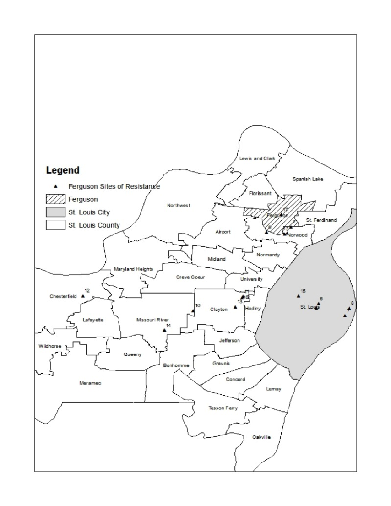

Figure 1 illustrates spaces 1 through 17, consisting of the various sites activists highlighted. While #Ferguson became a national social media movement, interviews with community activists suggest this site of resistance served as one of many spaces for protests.
Content copyright © 2017 TBD.